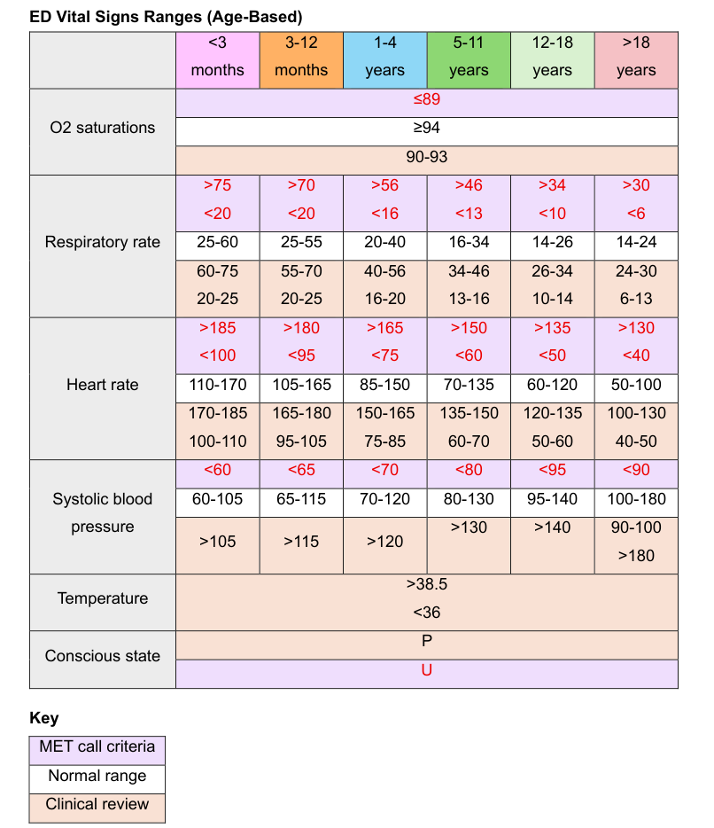

Secondary Survey: Paediatrics Head-To-Toe Assessment

ISB
-
- Name
- DOB
- URN
- GOC
-
- HOPC
-
- Pmhx
- Previous admissions
- Bhx
- Medications
- Allergies
- IUTD
Central Nervous System (CNS)
- GCS
- PEARL
- Sedation and paralysing agents
- Limb strength
- C-spine
- Speech
-
- CPOT
- FLACC
- FACES
- 0-10
Respiratory
- RR
- SpO2
- ETCO2
-
- Absent
- Bronchial
- Clear
- Coarse/fine crackles
- Diminished
- Friction rub
- Ronchi
- Stridor
- Wheeze (inspiratory/expiratory)
-
- Size
- Uncuffed = age/4 + 4
- Cuffed/microcuffed = age/4 + 3.5
- Length/depth
- Lip level = age/2 + 12
- Nasal level = age/2 + 15
- Cuff pressure
- 20-30mmHg
- Confirm position
- Chest auscultation
- ETCO2
- CXR
- Equal rise and fall of the chest
-
- Mode
- VC vs PC
- FiO2
- fRR
- PEEP
- PS
- Vt (5-8mL/kg)
- MV
- PIP
- Flow
- Sensitivity
- It
- I:E
- Check alarms
Cardiovascular System (CVS)
- HR
- BP
- Pulses
- CCRT
-
- Colour
- Warmth
- Dry or clammy
- Heart sounds
- JVP
- Inotropes/vasopressors
-
- 10-20mL/kg
- Fontanelles
- Oedema
Input/ouput
- Urine output
- Stool output
-
- Respiratory tract
- Skin
-
- NGT/OGT
- PO
- TPN
-
- 4,2,1 rule for IV maintenance
- 4ml x 10kg for the first 10kg
- 2ml x 10kg for the next 10kg
- 1ml x for the kg thereafter
- 4,2,1 rule for IV maintenance
Gastrointestinal tract (GIT)
- Inspect stomach
- Auscultate bowel sounds
-
- Distension
- Masses
- Tenderness
- Firm
- Soft
Skin Integrity
- Rash
- Pressure areas
- Localised abnormalities
Lines, drains and devices
-
- EVD
-
- ETT
- NPA/OPA
- ICC/UWSD
- Cardiac drains
-
- Arterial line (NV obs)
- PIVC
- CVC
-
- IDC
- PEG/PEJ
-
- NGT/OGT
Medications
- Indications
- Times
Social
- Home life
- Family
- Community supports
- Developmental milestones
Results
-
- Blood gas interpretation
- Electrolyte imbalance
- HB
- Lactate
- BGL
-
- Details
- Rotation, inspiration, picture, exposure
- Subcutaneous emphysema
- Airway
- Breathing/bones
- Cardiac
- Diaphragm
- Extras
-
- Rhythm
- Rate
- P wave
- PR interval
- QRS complex
- ST segment
- T wave
- QT interval
- Interpretation
Plan
- Imaging
- Investigations
- Referrals
- Monitoring
- Discharge planning